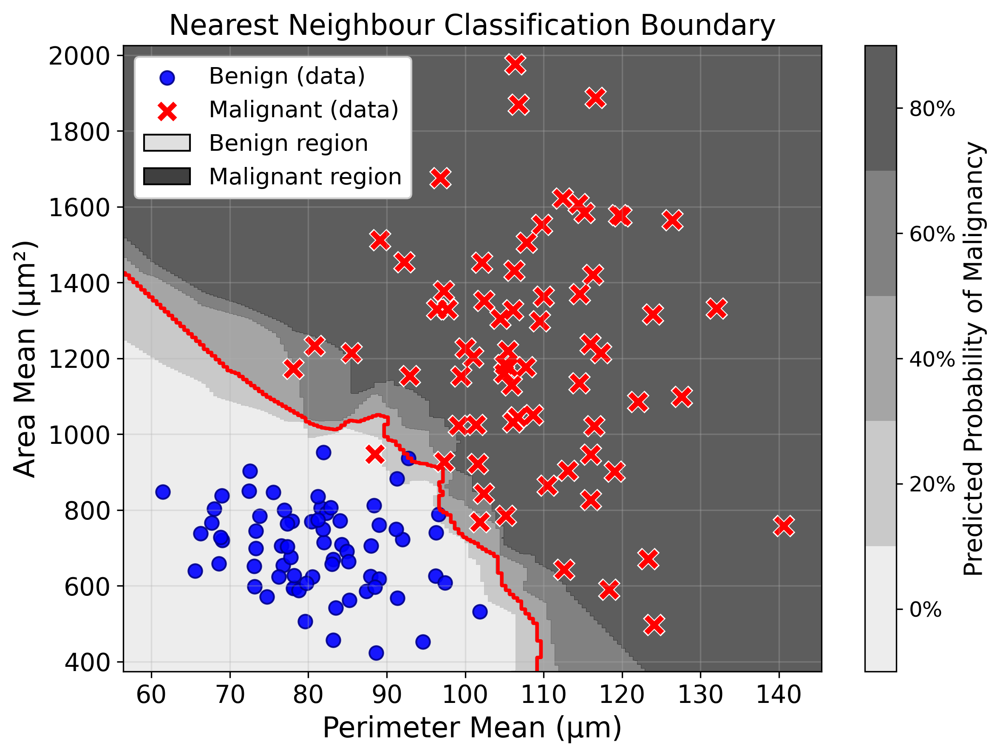
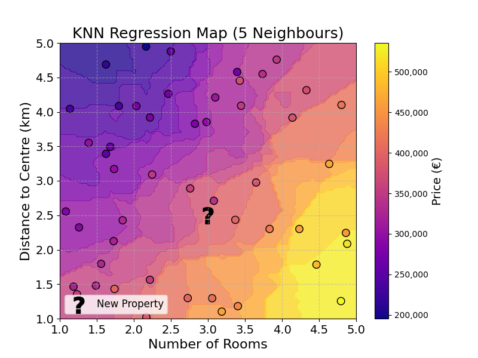

7 Neighbours
7.1 Intuition
It is all starting to come together. It is now time to build the first prediction model in this book. \[ \text{Input} \longrightarrow \text{Model} \longrightarrow \text{Predictions} \]
A Machine Learning model learns the relationship between input/output pairs to generate predictions on new inputs. For the first time in this book, this chapter will explore how these models learn.
Using the example of tumour diagnosis:

We want to predict the diagnosis of the observation labelled with a question mark (\(?\)). How could this be done using distance?
A good start would be to get the new observation’s closest neighbours. This can be done by calculating the distance between the new observation and the existing observations, and picking the ones with shortest distances.
Using your intuition, how would you classify this new observation?
What did our intuition rely on to make this judgement? When I came up with a prediction, I looked at the observation’s neighbours and applied a majority vote.
7.2 Algorithm
How can we build this intuition into a program, an algorithm?
The goal is to craft a list of rules that could be executed by a computer. Such a list could look like this:
- Find the 5 closest neighbours of the observation
- Count the number of neighbours per class
- The new observation is labelled with the class that has the highest number of neighbours
In Machine Learning, this model is referred to as K-Nearest Neighbours or KNN. \(K\) simply means any positive integer, referring to the number of neighbours considered (here 5).
This model acts as a map from feature values to a prediction. Using the algorithm described above, any tumour observation can be assigned to a diagnosis. This map can be visualised by applying this majority vote to every point and colouring it by its diagnosis:

Figure code
import numpy as np
import matplotlib.pyplot as plt
from sklearn.neighbors import KNeighborsClassifier
from matplotlib.colors import ListedColormap
from sklearn.preprocessing import StandardScaler
from sklearn.datasets import make_blobs
benign_center = [80, 700]
malignant_center = [110, 1200]
n_samples = 70
X_benign, _ = make_blobs(n_samples=n_samples, centers=[(0, 0)], cluster_std=1, random_state=1)
X_malignant, _ = make_blobs(n_samples=n_samples, centers=[(0, 0)], cluster_std=1, random_state=2)
benign_std = [10, 120]
malignant_std = [12, 300]
X_benign = X_benign * benign_std + benign_center
X_malignant = X_malignant * malignant_std + malignant_center
# Combine into features and target
X = np.vstack([X_benign, X_malignant])
y = np.hstack([np.zeros(len(X_benign)), np.ones(len(X_malignant))])
# Scale the features
scaler = StandardScaler()
X_scaled = scaler.fit_transform(X)
# Create custom colors with brighter hues
custom_cmap = ListedColormap(['#80C2FF', '#FF8080'])
# Fit a KNN classifier with scaled data
clf = KNeighborsClassifier(
n_neighbors=5,
weights='uniform',
algorithm='auto',
metric='euclidean'
)
clf.fit(X_scaled, y)
# Create the decision boundary plot
plt.figure(figsize=(8, 6))
# Create a meshgrid for displaying the decision boundary
h = 0.5 # step size in the mesh
x_min, x_max = X[:, 0].min() - 5, X[:, 0].max() + 5
y_min, y_max = X[:, 1].min() - 50, X[:, 1].max() + 50
xx, yy = np.meshgrid(np.arange(x_min, x_max, h),
np.arange(y_min, y_max, h))
# Scale the mesh points the same way the training data was scaled
mesh_points = np.c_[xx.ravel(), yy.ravel()]
mesh_points_scaled = scaler.transform(mesh_points)
# Predict using the scaled mesh points
Z = clf.predict(mesh_points_scaled)
Z = Z.reshape(xx.shape)
# Plot the decision boundary
plt.contourf(xx, yy, Z, alpha=0.4, cmap=custom_cmap)
# Plot the data points (using original unscaled coordinates for display)
plt.scatter(X_benign[:,0], X_benign[:,1], marker='o', color='blue', label='Benign',
s=60, edgecolor='darkblue', alpha=0.9, linewidth=1)
plt.scatter(X_malignant[:,0], X_malignant[:,1], marker='x', color='red', label='Malignant',
s=60, linewidth=2)
plt.title('Nearest Neighbour Classification Boundary', fontsize=16)
plt.xlabel('Perimeter Mean (µm)', fontsize=16)
plt.ylabel('Area Mean (µm²)', fontsize=16)
plt.xticks(fontsize=14)
plt.yticks(fontsize=14)
plt.legend(fontsize=12)
plt.grid(True, alpha=0.3)
plt.tight_layout()
plt.savefig("images/neighbours/classification_boundary.png")
plt.show()7.3 Adding some nuance
This is all very exciting. But let’s consider the following example from a patient’s perspective. Let’s imagine we have to predict the diagnosis of the following tumours:

Figure code
import matplotlib.pyplot as plt
import numpy as np
def plot_neighbours(num_malignant, ax, total_neighbours=5):
num_malignant = min(num_malignant, total_neighbours)
num_benign = total_neighbours - num_malignant
angles_malignant = np.linspace(0, np.pi, num_malignant + 1, endpoint=False)[:-1] if num_malignant > 0 else []
angles_benign = np.linspace(np.pi, 2*np.pi, num_benign + 1, endpoint=False)[:-1] if num_benign > 0 else []
radius = 0.5
# Plot malignant neighbours
for i in range(num_malignant):
ax.plot(radius * np.cos(angles_malignant[i]), radius * np.sin(angles_malignant[i]), 'rx', markersize=10)
# Plot benign neighbours
for i in range(num_benign):
ax.plot(radius * np.cos(angles_benign[i]), radius * np.sin(angles_benign[i]), 'bo', markersize=10)
# Central unknown point
ax.plot(0, 0, 'g', markersize=18, marker=r'$\mathbf{?}$')
ax.set_title(f'{num_malignant} Malignant, {num_benign} Benign', fontsize=18)
ax.set_xticks([])
ax.set_yticks([])
ax.set_xlim([-1, 1])
ax.set_ylim([-1, 1])
ax.set_aspect('equal', adjustable='box')
# Create a 2x3 subplot layout
fig, axes = plt.subplots(2, 3, figsize=(15, 10))
fig.suptitle('Classification based on Nearest Neighbours', fontsize=20, y=0.98)
# Flatten the axes array for easier iteration
axes = axes.flatten()
for i in range(6):
plot_neighbours(i, axes[i])
# Add a legend to the first subplot
axes[0].plot([], [], 'rx', markersize=10, label='Malignant')
axes[0].plot([], [], 'bo', markersize=10, label='Benign')
axes[0].plot([], [], ' ', markersize=18, marker=r'$\mathbf{?}$', label='Unknown')
axes[0].legend(loc='upper right', fontsize=12)
plt.subplots_adjust(top=0.9)
plt.show()There, a simple majority vote would mean that the observation with 2 malignant neighbours could be classified as “benign”. As a patient, I would prefer to have a second opinion there.
As 2 out of the 5 neighbours of this observation are malignant, we are less certain that this tumour is benign. Could the model prediction reflect this uncertainty?
One way to do this would be, instead of taking the winner of a majority vote, we could estimate the probability of a tumour to be malignant.
Note: Defining Probability
The probability assigns a degree of belief to an event, between 0 and 1. For example, the probability of rolling a 4 on a fair six-sided die is \(1/6 \approx 0.167\). The probability of getting heads on a fair coin is \(1/2 = 0.5\).
Before computing the predicted probability of malignancy, we could start with intuition. If the 5 neighbours of the observation are malignant, the model should be 100% sure that the tumour is malignant. Conversely, if none of its 5 neighbours is malignant, the model would assign a probability of 0% to malignancy.
So far so good. But what about 3 and 2, or 1 and 4? By calculating the average, we could come up with a predicted probability.
If 3 neighbours are malignant and 2 are benign, we could compute the probability of malignancy with the expression:
\[ \text{Probability} = \frac{3}{3+2} = \frac{3}{5} = 0.6 = 60\% \]
Exercise 7.1 Calculate the probability of malignancy if four out of five neighbours are malignant. Show that it is \(80\%\)
By using this approach, the model can output more nuanced predictions that reflect the uncertainty in the training data.
This approach can be used to revise the map visualised in the previous section. Instead of being coloured by the predicted label, it is coloured by the predicted probability of malignancy (\(1\) malignant, \(0\) benign).

Figure code
import numpy as np
import matplotlib.pyplot as plt
from sklearn.neighbors import KNeighborsClassifier
from matplotlib.colors import ListedColormap, BoundaryNorm
from sklearn.preprocessing import StandardScaler
from sklearn.datasets import make_blobs
benign_center = [80, 700]
malignant_center = [110, 1200]
n_samples = 70
X_benign, _ = make_blobs(n_samples=n_samples, centers=[(0, 0)], cluster_std=1, random_state=1)
X_malignant, _ = make_blobs(n_samples=n_samples, centers=[(0, 0)], cluster_std=1, random_state=2)
benign_std = [10, 120]
malignant_std = [12, 300]
X_benign = X_benign * benign_std + benign_center
X_malignant = X_malignant * malignant_std + malignant_center
# Combine into features and target
X = np.vstack([X_benign, X_malignant])
y = np.hstack([np.zeros(len(X_benign)), np.ones(len(X_malignant))])
# Scale the features
scaler = StandardScaler()
X_scaled = scaler.fit_transform(X)
# Fit a KNN classifier with scaled data
clf = KNeighborsClassifier(
n_neighbors=5,
weights='uniform',
algorithm='auto',
metric='euclidean'
)
clf.fit(X_scaled, y)
# Create the decision boundary plot
plt.figure(figsize=(10, 6))
# Create a meshgrid for displaying the decision boundary
h = 0.5 # step size in the mesh
x_min, x_max = X[:, 0].min() - 5, X[:, 0].max() + 5
y_min, y_max = X[:, 1].min() - 50, X[:, 1].max() + 50
xx, yy = np.meshgrid(np.arange(x_min, x_max, h),
np.arange(y_min, y_max, h))
# Scale the mesh points the same way the training data was scaled
mesh_points = np.c_[xx.ravel(), yy.ravel()]
mesh_points_scaled = scaler.transform(mesh_points)
# Predict probabilities using the scaled mesh points
Z_proba = clf.predict_proba(mesh_points_scaled)[:, 1] # Probability of class 1 (malignant)
Z_proba = Z_proba.reshape(xx.shape)
# Create a discrete colormap with exactly 6 levels
# Define the boundaries for the 6 levels
bounds = [0.0, 0.2, 0.4, 0.6, 0.8, 1.0, 1.01] # Adding 1.01 to ensure 1.0 is included in the last bin
# Define the colors for each level - blue to red gradient
colors = ['#0050FF', '#5080FF', '#80AAFF', '#FFB080', '#FF8050', '#FF5000']
# Create a custom discrete colormap with these colors and boundaries
cmap = ListedColormap(colors)
norm = BoundaryNorm(bounds, cmap.N)
# Plot the decision boundary with discrete probability levels
contour = plt.contourf(xx, yy, Z_proba, levels=bounds, cmap=cmap, norm=norm, alpha=0.7)
# Plot the data points (using original unscaled coordinates for display)
plt.scatter(X_benign[:,0], X_benign[:,1], marker='o', color='blue', label='Benign',
s=60, edgecolor='darkblue', alpha=0.9, linewidth=1)
plt.scatter(X_malignant[:,0], X_malignant[:,1], marker='x', color='red', label='Malignant',
s=60, linewidth=2)
# Add a colorbar with discrete ticks
cbar = plt.colorbar(contour, ticks=[0.1, 0.3, 0.5, 0.7, 0.9]) # Position ticks in middle of each bin
cbar.set_label('Probability of Malignant', fontsize=14)
# Set custom labels on the colorbar
cbar.ax.set_yticklabels(['0%', '20%', '40%', '60%', '80%'])
cbar.ax.tick_params(labelsize=12)
# Add a 100% label at the top
cbar.ax.text(0.5, 1.02, '100%', transform=cbar.ax.transAxes,
ha='center', va='bottom', fontsize=12)
plt.title('Nearest Neighbour Classification Boundary', fontsize=16)
plt.xlabel('Perimeter Mean (µm)', fontsize=16)
plt.ylabel('Area Mean (µm²)', fontsize=16)
plt.xticks(fontsize=14)
plt.yticks(fontsize=14)
plt.legend(fontsize=12, loc='upper left')
plt.grid(True, alpha=0.3)
plt.tight_layout()
plt.show()7.4 From classification to regression
The above section only showed the application of KNN to a classification problem, predicting the diagnosis of a suspicious mass.
Could the same model be used for a regression problem (predicting a continuous quantity)?
To do so, let’s turn to the problem of property pricing. When selling a property, customers need to know how much their property is worth. This can be used as a basis to compute the listing price, price for which the property is first listed. It is also in the buyer’s interest to have a very good estimation of the value of a property before agreeing to the transaction.
As explained in the Defining Prediction chapter, this pricing can be done with:
- Intuition: From experience, real estate have an understanding of the property market in their area of specialisation. They could “know” how much a property would be worth
- Rule-based Systems: Property analysts could build models that price properties based on their characteristics. A simple rule working surprisingly well is: average price per square meter * surface area of the property
Can we use the Nearest Neighbour model to learn from historical data and generate new price predictions for unseen data? Another leading question. Yes.
For simplicity, let’s use the following features: number of rooms and distance from centre (\(km\)).
The training data looks like this:

Figure code
import numpy as np
import matplotlib.pyplot as plt
from sklearn.neighbors import KNeighborsRegressor, NearestNeighbors
np.random.seed(42)
num_samples = 50
number_of_rooms = np.random.uniform(1, 5, num_samples)
distance_to_centre = np.random.uniform(1, 5, num_samples)
# Price formula: base price + price per room - price per km from centre + noise
price = 300000 + 60000 * number_of_rooms - 40000 * distance_to_centre + np.random.normal(0, 25000, num_samples)
X = np.vstack([number_of_rooms, distance_to_centre]).T
new_observation = np.array([[3, 2.5]])
nbrs = NearestNeighbors(n_neighbors=5, algorithm='ball_tree').fit(X)
distances, indices = nbrs.kneighbors(new_observation)
# Print the neighbours' data for the table
print("The 5 closest neighbours are:")
for i in range(len(indices.flatten())):
idx = indices.flatten()[i]
# Rounding for display purposes
print(
f"Rooms: {round(X[idx, 0])}, "
f"Distance: {X[idx, 1]:.1f} km, "
f"Price: €{price[idx]:,.0f}"
)
plt.figure(figsize=(8, 6))
sc = plt.scatter(number_of_rooms, distance_to_centre, c=price, cmap='plasma', s=80, edgecolor='k')
plt.scatter(new_observation[0, 0], new_observation[0, 1], marker=r'$\mathbf{?}$', color='lime', s=400, label='New Property')
plt.scatter(X[indices, 0], X[indices, 1], facecolors='none', edgecolors='lime', s=200, linewidth=2, label='5 Closest Neighbours')
plt.xlabel('Number of Rooms', fontsize=16)
plt.ylabel('Distance to Centre (km)', fontsize=16)
plt.title('Berlin Property Price Training Data', fontsize=18)
cbar = plt.colorbar(sc)
cbar.set_label('Price (€)', fontsize=14)
cbar.ax.yaxis.set_major_formatter(plt.FuncFormatter(lambda x, p: format(int(x), ',')))
plt.legend(fontsize=12)
plt.xticks(fontsize=14)
plt.yticks(fontsize=14)
plt.grid(True, linestyle='--', alpha=0.6)Each dot represents a property, coloured by its price. The question mark (\(?\)) is the new property we want to price.
How would you predict the new observation’s price? You could start by selecting its 5 closest neighbours. The five closest neighbours are highlighted on the chart and shown in the table below:
| Number of Rooms | Distance to Centre (km) | Price (k€) |
|---|---|---|
| 3 | 2.7 | 341 |
| 3 | 2.4 | 401 |
| 3 | 2.9 | 358 |
| 4 | 3.0 | 377 |
| 4 | 2.3 | 425 |
Now, how could we generate a single prediction from this list?
The simplest approach would be to compute an average of all the neighbouring prices and use this as the prediction:
\[\text{Predicted Price} = \frac{451 + 467 + 457 + 468 + 436}{5} = \frac{2279}{5} = 456\]
That is it, we have our predictions! This process should remind you of probability predictions.
Using this method, we could also compute a map of property prices over the two features: number of rooms and distance from centre.

Figure code
knn_reg = KNeighborsRegressor(n_neighbors=5)
knn_reg.fit(X, price)
xx, yy = np.meshgrid(np.linspace(1, 5, 100), np.linspace(1, 5, 100))
Z = knn_reg.predict(np.c_[xx.ravel(), yy.ravel()]).reshape(xx.shape)
plt.figure(figsize=(8, 6))
plt.contourf(xx, yy, Z, cmap='plasma', alpha=0.8, levels=20)
sc = plt.scatter(number_of_rooms, distance_to_centre, c=price, cmap='plasma', s=80, edgecolor='k')
plt.scatter(new_observation[0, 0], new_observation[0, 1], marker=r'$\mathbf{?}$', color='lime', s=400, label='New Property')
plt.xlabel('Number of Rooms', fontsize=16)
plt.ylabel('Distance to Centre (km)', fontsize=16)
plt.title('KNN Regression Map (5 Neighbours)', fontsize=18)
cbar = plt.colorbar(sc)
cbar.set_label('Price (€)', fontsize=14)
cbar.ax.yaxis.set_major_formatter(plt.FuncFormatter(lambda x, p: format(int(x), ',')))
plt.legend(fontsize=12)
plt.xticks(fontsize=14)
plt.yticks(fontsize=14)
plt.grid(True, linestyle='--', alpha=0.6)The map shows that there is a positive relationship between number of rooms and price, and the negative relationship between distance to centre and price. The most expensive properties are both central and have a high number of rooms. The (simple) model built allows us to map any given combination of number of rooms and distance to centre to a price.
7.5 Final Thoughts
KNN is only the first of the Machine Learning models studied in this book. This model learns the relationship between input features and a target, using distance calculations and average over neighbours. Can you think of a way you could use KNN to predict something in your everyday life?
We have our first model, but how good is it? We will explore this in the next chapter.
7.6 Practice Exercise
Exercise 7.2 Suppose you are building a model to detect fraudulent transactions. You use two features, both measured on a 0–100 scale:
- Transaction Amount ($) (0–100)
- Customer Age (years) (0–100)
You have the following 10 transactions in your training data:
| Transaction Amount | Customer Age | Fraudulent? |
|---|---|---|
| 95 | 22 | Yes |
| 90 | 25 | Yes |
| 92 | 23 | Yes |
| 97 | 21 | Yes |
| 93 | 24 | Yes |
| 94 | 23 | No |
| 20 | 80 | No |
| 25 | 78 | No |
| 18 | 82 | No |
| 23 | 77 | No |
A new transaction occurs with an amount of 93 and customer age 23.
Question:
1. Calculate the distance from each observation to the new transaction.
2. Identify the 5 nearest neighbours and their labels.
3. What is the predicted probability that the new transaction is fraudulent?
7.7 Solutions
Solution 7.1. Exercise 7.1
\[ \text{Probability} = \frac{4}{4+1} = \frac{4}{5} = 0.8 = 80\% \]
Solution 7.2. Exercise 7.2
The distance between two observations is calculated as:
\[ \text{Distance} = \sqrt{(x_1 - x_2)^2 + (y_1 - y_2)^2} \]
where \((x_1, y_1)\) are the features of the training observation, and \((x_2, y_2)\) are the features of the new transaction (93, 23).
Let’s compute the distance for each observation:
| ID | Transaction Amount | Customer Age | Fraudulent? | Distance to (93,23) |
|---|---|---|---|---|
| 1 | 95 | 22 | Yes | \(\sqrt{(95-93)^2 + (22-23)^2} \approx 2.24\) |
| 2 | 90 | 25 | Yes | \(\sqrt{(90-93)^2 + (25-23)^2} = \approx 3.61\) |
| 3 | 92 | 23 | Yes | \(\sqrt{(92-93)^2 + (23-23)^2} = 1.00\) |
| 4 | 97 | 21 | Yes | \(\sqrt{(97-93)^2 + (21-23)^2} = \approx 4.47\) |
| 5 | 93 | 24 | Yes | \(\sqrt{(93-93)^2 + (24-23)^2} = 1.00\) |
| 6 | 94 | 23 | No | \(\sqrt{(94-93)^2 + (23-23)^2} = 1.00\) |
| 7 | 20 | 80 | No | \(\sqrt{(20-93)^2 + (80-23)^2} \approx 92.6\) |
| 8 | 25 | 78 | No | \(\sqrt{(25-93)^2 + (78-23)^2} \approx 87.46\) |
| 9 | 18 | 82 | No | \(\sqrt{(18-93)^2 + (82-23)^2} \approx 95.43\) |
| 10 | 23 | 77 | No | \(\sqrt{(23-93)^2 + (77-23)^2} \approx 88.41\) |
Sorted by distance (nearest first):
| ID | Distance | Fraudulent? |
|---|---|---|
| 3 | 1.00 | Yes |
| 5 | 1.00 | Yes |
| 6 | 1.00 | No |
| 1 | 2.24 | Yes |
| 2 | 3.61 | Yes |
The 5 nearest neighbours are:
- 4 fraudulent: ID 3, 5, 1, 2
- 1 non-fraudulent: ID 6
Predicted probability of fraud:
\[ P(\text{Fraud}) = \frac{4}{5} = 0.8 = 80\% \]